大掃除の日。物置の奥から、古い旅のリュックが出てきた。
ずっとむかしから生きている宇宙人のソラは、中をのぞいて、しばらく黙った。
「……そういえば、宇宙に忘れ物してきた」
その夜、ソラはモチベアたち四人と、忘れ物を取りに旅に出た。
長い年月のあいだに、忘れ物たちがそれぞれの星で、ただの忘れ物ではなくなっているとも知らずに。
ためた BP のぶんだけ、船は先へ進む。
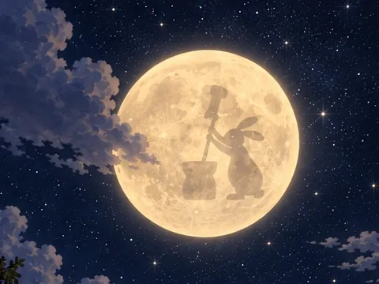
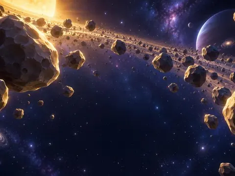
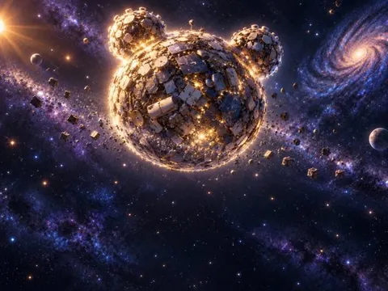
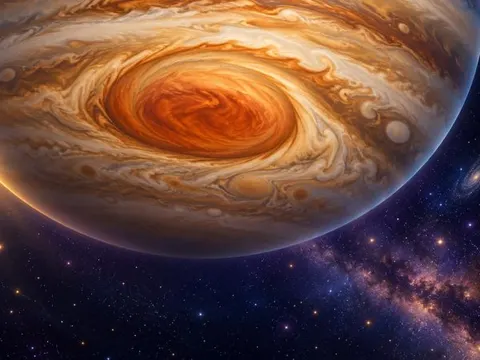
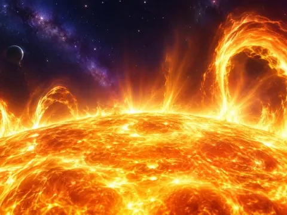
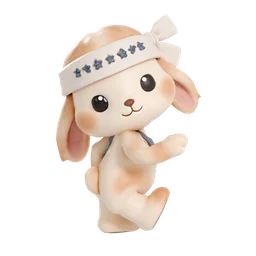
月のうさぎ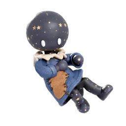
ミエナイコ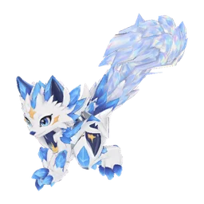
彗星のオオカミ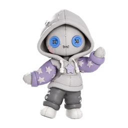
ソラの人形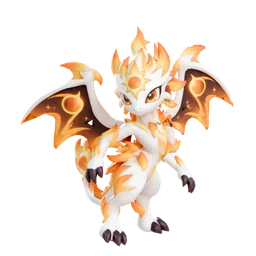
フレアドラゴン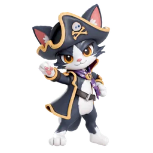
宇宙海賊ニャルロ帽子・持ち物・乗り物・モーション・背景、あわせて 51 点。
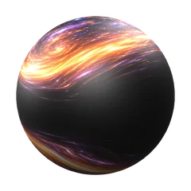
ブラックホールのビー玉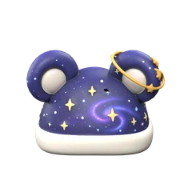
衛星つきの帽子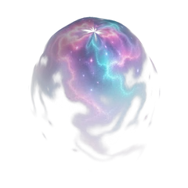
星が生まれるベール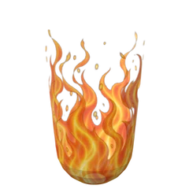
あっちっち！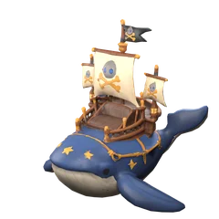
船になったクジラ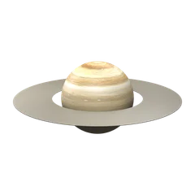
土星※ 期間が終わると、残っている報酬は受け取れません。
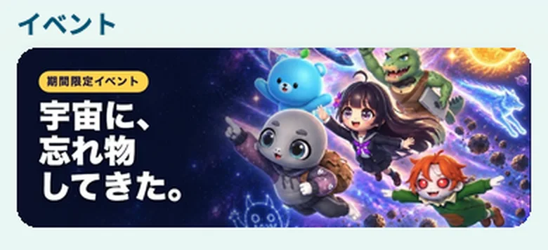
宇宙に置いてきた物が、何になっているのか。